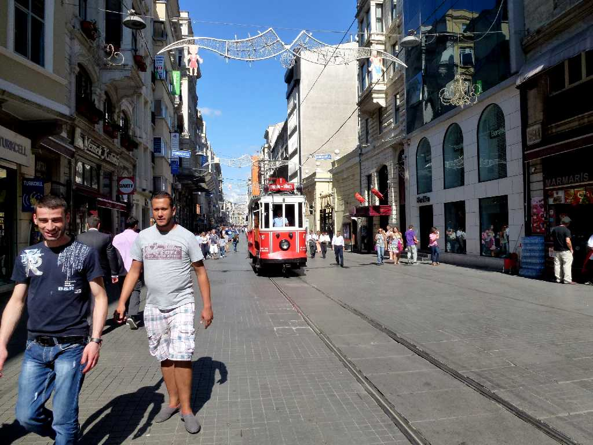
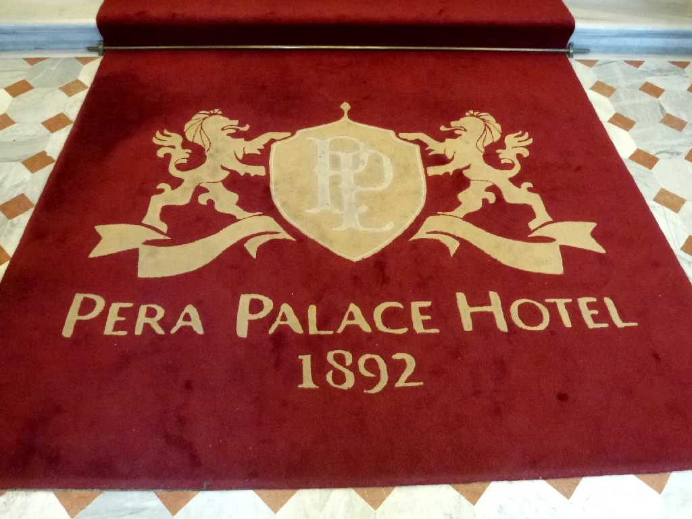
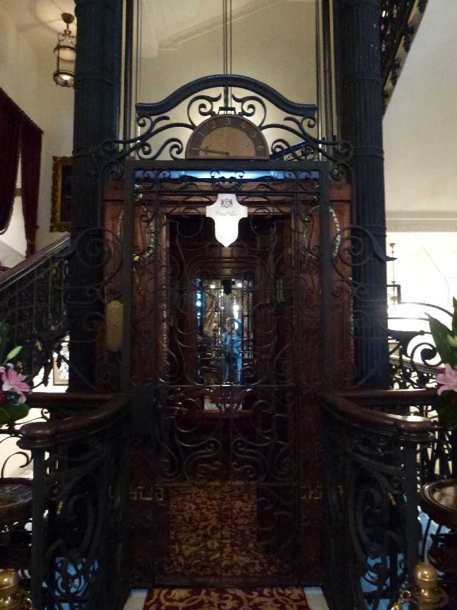

Old Tram Istiklal Street New City Istanbul
トラムが走る新市街地のメインストリート
Tunel Istanbul
イスタンブールの名物地下ケーブルカー
 
The second oldest Elevator in Europe Pera Palace Hotel Istanbul
アガサクリスティーも泊まったホテルでヨーロッパで二番目に古いエレベーターがある ３０年前には自由に乗れたが今回はエレベーターガールもいなく乗れなかった